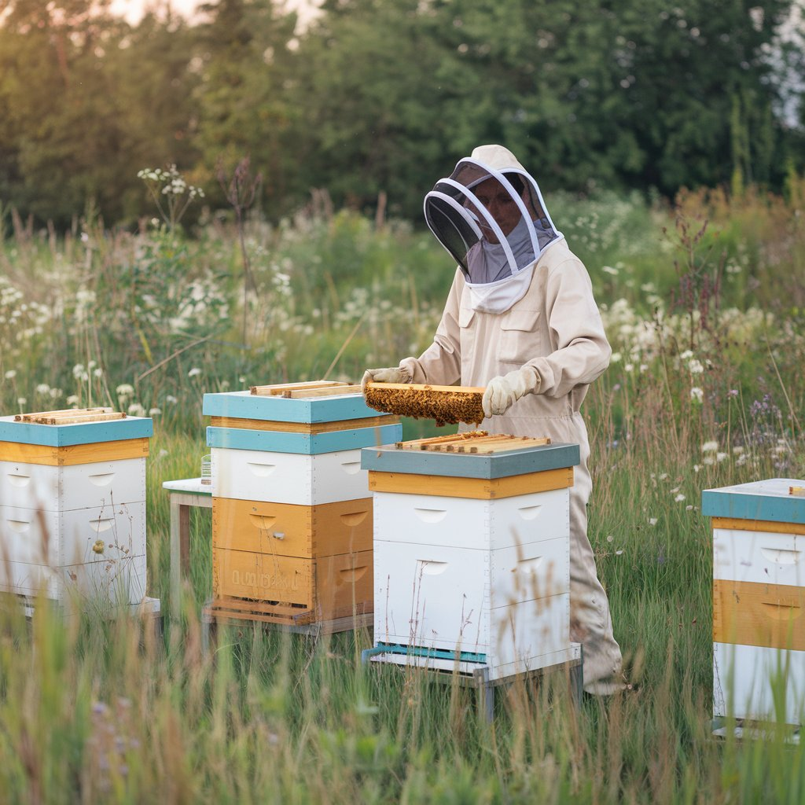

Bees collect nectar
Foragers visit flowers and bring nectar back to the hive, spreading pollen as they travel through the neighborhood.
Our story

Fictional local business
Primrose Apiary is a small family-run apiary that keeps hives near wildflower fields, herb beds, and backyard orchards. The mission is simple: harvest thoughtfully, protect pollinators, and make honey that tastes like the place it came from.
The apiary plants native flowers, avoids harsh treatments during nectar flow, and keeps enough honey in the hive so colonies stay strong through the season.
Interactive process
Foragers visit flowers and bring nectar back to the hive, spreading pollen as they travel through the neighborhood.
Bee education
Pollinators help fruits, vegetables, and flowers reproduce by moving pollen from bloom to bloom.
Native plants, shallow water, and pesticide awareness make outdoor spaces safer for bees.
Each honey harvest reflects the plants blooming nearby, so honey can change like a seasonal menu.